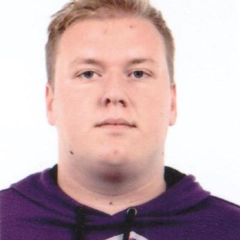

--About me--
I am a 27-year-old third-year Computer Science student with a strong passion for programming and software development. I have hands-on experience in backend, web, and mobile app development using Laravel, .NET, C/C++, Java, and Kotlin.
I am eager to learn new technologies, explore frameworks, and work on real-world projects with professionals. I’m enthusiastic, adaptable, and always seeking challenges that help me grow both personally and professionally.
--Experience--
WEBAPIX Kft — Web Developer (Erasmus+ project, Budapest)
Summer 2024 & 2025
- Developed web applications using Laravel
- Collaborated with team members on project tasks
- Gained practical experience with backend frameworks
Accenture Services SRL — Software Developer Intern
Summer 2025, Târgu Mureș, Romania
- Worked with C# and .NET Framework
- Assisted in software testing and maintenance
- Participated in Agile-based development environment
--Studies--
George Emil Palade University of Medicine, Pharmacy, Science and Technology of Târgu Mureș
Computer Science Student (2023 – jelenleg)
umfst.ro
Liceul Teoretic Carei
High School Diploma, Natural Sciences (2012 – 2016)
--Skills--
Contact
📧 Email: barth.partick-laszlo.23@stud.umfst.ro
🏙️ City: Târgu Mureș, Románia